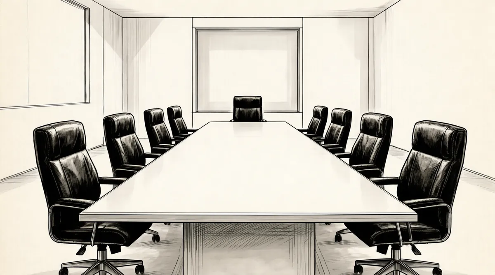

第49章 愤怒的众神

仅依靠巴菲特的名声，所罗门就能存活下来——监管人员的这种想法显然错了。一些大客户甚至对公司产生了厌恶感，首先是最大、最具影响力的加利福尼亚公共雇员退休体系从所罗门退出，接着是世界银行。每天夜里，所罗门数千亿债券几周后快到期的景象就像只羸弱的病羊一样颤颤巍巍地走入巴菲特的梦中。巴菲特第一次感觉到事情不在他的控制之下。“这一切都要把我击垮了，我下不了车，我不知道这趟车要开往哪里。”
对于公司上下每天所做的事我无能为力；对于我后来发现的，我在接手以前并不知道；对于科里根对这一切的想法，或是纽约南部地区的检察院或司法局的反托拉斯部门将要采取的行动，我都毫无办法。我知道让一切恢复正常极为重要，我也知道不管我有多努力，有些事情都是无法控制的。我可以整夜不睡，苦苦思索这一切，但无法保证一切都有个好的结果。很多人都会因此有不同的结果，这将改变我的整个人生。
巴菲特第二周返回到纽约。丹尼尔·帕特里克·莫伊尼汉议员就所罗门一事要求见他一面，而且其他很多事也需要巴菲特出面。巴菲特和芒格将莫伊尼汉带到了所罗门47层的私人餐厅。厨师为莫伊尼汉准备了标准的华尔街商务餐，甚至还有红酒，而巴菲特和芒格自己则点了三明治。莫伊尼汉厌恶地看了看套餐。此时，飓风“鲍勃”的余势还继续冲击着整个东海岸。突然之间，大雨像瀑布一样顺着窗户倾泻下来。“众神都对所罗门愤怒了。”巴菲特说道。1
这周之后的几天，巴菲特和芒格前往华盛顿的美国证券交易委员会见麦克卢卡斯和布里登。麦克卢卡斯后来回忆说：“他们两个就像是在汽车站常见的普通小子一样。”后来他们开始讨论，并制订出计划拯救所罗门，这时麦克卢卡斯才明白，为什么这两人中一个被誉为传奇，而一个被誉为结束传奇的人物。2
之后，巴菲特亲自上门拜访财政部的布雷迪。布雷迪曾认为巴菲特所做的一切只不过是在虚张声势罢了。“沃伦，”他说，“我知道不管我们做什么都无法阻止你。”3最终，巴菲特诚挚的请求打动了布雷迪。“尽快结束一切。”布雷迪说。
巴菲特下定决心，不管所罗门犯了什么错误都要及时纠正过来。“纠正过来，迅速纠正过来！”他说。当巴菲特说“迅速”的时候，他的确是指“迅速”。他和他的新秘书，曾为古特弗罗因德工作，并对所有人都很熟悉的保拉谈了话。巴菲特建议她说，为什么不和董事会的成员谈谈，问他们了解些什么？什么时候知道的？4鲍勃·登纳姆，这个言行谨慎，芒格–托尔斯律师事务所的首席律师，从洛杉矶亲自飞来调查此事，他介入到巴菲特的计划当中，并且迅速叫停该调查计划。这些调查本该由律师来完成。
登纳姆所做的第一件事就是接见唐·福伊尔施泰因。随后，福伊尔施泰因迅速被解雇了。福伊尔施泰因要求面见巴菲特，巴菲特只简单地和他说：“你本该做更多的事情。”从一开始巴菲特就知道，福伊尔施泰因并不完全清楚事情的来龙去脉。5然而，巴菲特后来得出结论：出于对古特弗罗因德的忠诚，福伊尔施泰因将上司的利益放在了所罗门集团的利益之上。于是，登纳姆成了总顾问。在逐步控制大局的过程中，巴菲特发现董事会受到了所谓的所罗门管理层的巧妙“信息定额”的控制。他和芒格发现，在4月份莫泽尔第一次承认提交未经授权的竞标申请时，整个公司早已发现莫泽尔试图掩盖一切，并且还在误导他所利用的客户，声称他们提交的长期国债认购单出现了文书错误。
一切就好比是莫泽尔点燃了一根火柴，在4月29日的时候，古特弗罗因德本应该吹灭莫泽尔点燃的这根火柴，然而他却撒手不管。
结果是莫泽尔似乎有纵火犯的嫌疑，随后他点燃的火柴远远超出了我们的想象。古特弗罗因德的职责本该是及时制止这一切，然而他先是撒手不管，随后也许是出于恐慌，又开始火上浇油了。
最后的结果就是所罗门的股东们损失了上亿美元，8000多名员工和他们的家人面临失业的困境。
我认为这是世界上最简单的事情。你有位同事——莫泽尔——承认将错误的竞标申请交给了世界上最重要的客户和监管人员——美国政府。然后，你又发现他拉了一名客户下水，试图和他一起掩盖一切，好让美国政府无法发现真相。
这一切都不关古特弗罗因德的事。
但当你听说这样一件事时，很明显你的第一反应应该是在10秒钟内拿起电话，说：莫泽尔，你被解雇了。然后，你就该马上去找科里根，告诉他：杰里，你看，这是涉及8000名员工的事情，那个家伙已取消预订，我一了解事情真相后就解雇了他，你看我下一步该怎么做？6
当然，对很多人来说，10秒钟认清楚这一切并不简单，他们会考虑很多其他事情。莫泽尔对公司太重要了，他曾对外汇交易部门做出了重要贡献，开除他并不是件好事。有没有可能将他贬回原职呢？要向监管人员坦白这一切并不容易，他们的反应也许会非常激烈。不止一个法律公司说过，从技术上来说，并不一定要将事情全盘报告上去。然而巴菲特却完全没有考虑这些，他在计算概率。他立刻开始推算是否会产生任何灾难性的后果，然后又迅速开始思考该如何将这种灾难的概率降至最低。结果就是解雇莫泽尔，立刻坦白一切。在这件事上，巴菲特还考虑了诚信的问题，他无法容忍撒谎者和骗子，因此事情只能是这样了。
现在，他却不幸地发现，除了他之前被告知的一切，事实上还有更多的谎言和欺骗。调查报告说，福伊尔施泰因当时曾宣称莫泽尔的行为“本质上就已经构成了犯罪”——这与公司后来所了解的完全不一样。并且也从没有人将莫泽尔的行为报告给监管部门——监管规范行为的部门。的确，所罗门在监管上的态度只能称得上是松懈。后来，人们甚至对谁应该成为监管会成员产生了争论。7无论如何，证交会主管发现自己被蒙在鼓里时备受困扰，并对现有的程序遭到忽视大为愤怒。
巴菲特和芒格还了解到，在6月中旬，古特弗罗因德会见了财政部长助理鲍勃·格劳贝尔，为公司5月份“操纵”事件的指控而辩护。他们发现在这次会面以后，所罗门公司上层一直在考虑是否该立刻将2月份的错误竞标申请事件报告给格劳贝尔，几经考虑后认为时机还不够成熟。后来，格劳贝尔说他认为自己被骗了，因为古特弗罗因德对他隐瞒了一切。这次和格劳贝尔的会面僵化了所罗门与政府的关系，也损害了所罗门的信誉。
第二次新闻发布会召开后，所罗门宣称之所以没及时将真相公布于众，是因为“对事情没有予以足够的重视”。这种托词使整个董事会都好像是这场阴谋的策划者一样，特别是在古特弗罗因德和格劳贝尔见过面，有机会坦白真相的情况下。当然，整个董事会是根本不在乎这次与格劳贝尔的会面的。
在危机发生后的那整个周末里，就在巴菲特和政府协商的时候，他却对此事一无所知，对此，巴菲特感到非常愤怒。员工的首要任务本该是保护公司的利益，现在他们不但没有保护好这种权益，反而还拿这种权益冒险。这一切都让巴菲特万分愤怒，但还有一件事情巴菲特压根儿都不知道：由斯藤莱特执笔的那份最后通牒发给所罗门后，根本没有引起其管理层的警觉。
几天后，董事会召开，巴菲特就所了解的一切谈了谈自己的想法。董事会取消了前高管订阅的杂志，撤销了他们的秘书、司机和专用轿车，取消了他们的长途电话和短信服务，甚至禁止这些高管进入所罗门的办公楼。此外，董事会还试图取消他们的健康保险。利普顿不再担任法律顾问。起初，巴菲特对此还持有异议，后来也同意了。因为大家一致认为利普顿的法律建议根本没有保护到所罗门的声誉。8
现在，登纳姆监管着所罗门。为了使法律团队避嫌，巴菲特又将罗恩·奥尔森引进团队。奥尔森是芒格–托尔斯–奥尔森律师事务所（简称MTO）的最新合伙人，他曾经参与过《布法罗晚报》案，现在是伯克希尔–哈撒韦的法律代表。9MTO微调了他们的关注范围，以帮助客户从法律体系中获得最好的结果——巴菲特认为，在此方面他们经验丰富。
巴菲特告诉奥尔森，他想要采取一种全新的措施。10现在所罗门的名声几乎遭到了致命的打击，已经摇摇欲坠。在巴菲特看来，所罗门已经无法承受任何指控了。11现在的所罗门公司犹如癌症晚期患者。要想拯救所罗门，他认为必须采取极端措施，哪怕这种措施会让病人更加虚弱。巴菲特认为帮助所罗门规避指控的最好疗法就是表现出极大的忏悔之意。他将挖出最后一个癌细胞，用激光彻底销毁，加强整顿，绝不允许任何病症复发。
奥尔森上任第一天，就被纽约南部地区的检察官奥托·奥伯迈克召见。是否指控所罗门就是由奥伯迈克决定的。
我们向奥伯迈克提出的建议是要树立一个榜样。这将是非凡合作的一个榜样。我们树立了一个目标，这个目标将对未来被诉方的行为以及法律体系产生影响。
奥尔森做出了一个非同寻常的承诺。他当场放弃了所罗门公司的“律师——当事人保密特权”，而这一特权可以保护公司与律师之间的交流免受检察官调查。他说不管MTO在调查中发现什么，奥伯迈克都会知道。12说得直白一些，这就意味着MTO已经代表所罗门公司成了政府的左膀右臂。
“奥伯迈克很多疑，”奥尔森说，“他认为我们是中西部的江湖骗子，是来向他兜售货品的。”13他无法相信会有哪家公司自愿做违背他们利益的事情。毕竟，所罗门面临着被指控的危险。这一切用不了多长时间就可以得到证实。显然，这种“改革”并不是嘴上说说就完了的。
奥尔森很快飞到华盛顿，将一切汇报给了证券交易委员会的布里登。布里登也对这一切持有相同的怀疑。14
最初，大家还不清楚放弃特权意味着什么。弗兰克·巴伦——所罗门一家名为克拉瓦西–斯温–摩尔律师事务所的律师，负责解释这份非凡的礼物对司法部门的意义。由于已经做出了承诺，整个谈判的过程变得非常困难。所罗门没有任何砝码，而司法部门一个劲儿地施压，让所罗门履行承诺，并且也基本达到了其目的。15最后的协议将公司置于一个非常奇怪而又矛盾的局面中：让公司起诉自己的员工。MTO找到的关于员工有罪的证据越多，所罗门就越能表现出其愿意合作、洗清一切的决心。员工要么与公司合作，要么就会被解雇，正常的律师——当事人保密特权根本无法保护他们向调查人员所提供的证词。16
为了帮助巴菲特应对即将到来的国会质询，古特弗罗因德和他的律师几天后与奥尔森见了面。古特弗罗因德很愿意合作，但当他的律师试图对谈话做出一些规定时，奥尔森拒绝接受。最后，古特弗罗因德和他的律师离开了。17奥尔森回来向巴菲特汇报说他受到了“阻碍”。18
随着新的企业文化开始形成，整个所罗门上下变得混乱起来。在和奥伯迈克见面的几天后，奥尔森和巴菲特走进了世贸中心七楼的会议室。有人自动雇用了一家新的公关公司，20多人都围在一张巨型会议桌边等待奥尔森和巴菲特的到来。他们中有些人的确是为所罗门工作的，但大多数都是花钱雇来的说客。巴菲特听他们就如何挽救这场危机谈论了15分钟，然后他站了起来说：“抱歉，我得走了。”他弯下腰来，和奥尔森耳语了几句：“告诉他们，我们不需要他们。”然后他就走出了会议室。19
“天知道，这并不是我们被误解了。”巴菲特事后说，“我们没有公关问题，真正出问题的是我们自己的所作所为。”
8月30日是巴菲特的生日，这天他来到华盛顿，准备即将来临的国会质询。他安排史蒂夫·贝尔——所罗门华盛顿办事处的负责人召集了一班人，一起预测国会可能会提出的问题。
巴菲特下榻在华盛顿使馆区的一家酒店。随着突发事件不断出现，他连续两天都待在酒店房间里。在酒店，巴菲特遇到了一个电话接线生：卡罗琳·史密斯——后来成了他的秘书，帮他处理电话，送午餐、点心等。巴菲特私下里从不和卡罗琳·史密斯见面，但当财政部的布雷迪打来电话时，卡罗琳·史密斯还是想方设法和巴菲特说上了话，即使那时巴菲特将他房间里唯一一根电话线也切断了。20
几天后，巴菲特抽时间去了趟所罗门公司豪华的办事处，那时贝尔正和一群人集思广益。贝尔提前给纽约打了电话，询问该给巴菲特准备什么样的午餐。“简单一点儿就行，”纽约那边告诉他，“汉堡包就可以了。”和过去几十年中的许多人一样，贝尔认为不能从字面上理解这个“简单一点儿”。所以，到了午餐时间时，厨师为巴菲特端来了一盘鱼，巴菲特碰都没碰。然后厨师又端上来一份配有进口奶酪的沙拉，巴菲特也没有吃。第三道菜是类似小牛肉之类的东西，巴菲特尝了一两口就把盘子推开了。“巴菲特先生，”贝尔忧心忡忡地说道，“我发现你什么都没吃。怎么了？有什么我们能为您效劳的吗？”
“谈到食物，我总是遵循一条很简单的原则。”巴菲特说道，“3岁小孩不吃的东西，我也不吃。”21
第二天，巴菲特、德里克·莫恩和登纳姆一起来到雷伯恩众议院办公大楼，在国会面前做证。为给他们精神支持，格雷厄姆也出席了，并和莫恩以及登纳姆坐在第一排。巴菲特给人留下了十分深刻的印象。他独自坐在小组委员会桌旁，宣誓将与国会以及监管人员合作。22“我想知道过去到底发生了什么，这个污点只是少数几个人造成的，”他说，“和其他无辜的人无关。”
议员们以投资者救世主的姿态严厉谴责了所罗门公司，要求他们与过去划清界限。据莫恩所言，尽管如此，当巴菲特说“红海分开了，神谕出现了”时，23他们还是对巴菲特感到非常敬畏。巴菲特认为问题出在华尔街身上。“这个巨大的市场吸引了那些仅用金钱来衡量自己的人，”他说，“如果一个人的一生仅靠他有多少钱来衡量，或是用去年赚了多少钱来衡量，那么他迟早都要惹上麻烦。”巴菲特说，从现在开始，所罗门的重心将转移。
如果让公司亏钱了，我还能理解，但是如果让公司名誉受损，那我将毫不留情。
这句话后来成为公司诚信案例研究的对象。巴菲特这种毫不畏缩的原则性正是他本人的一种写照。这句话反映了他的诚实、正直、干脆和行事简单。巴菲特希望他本人所代表的品质——坦诚、正直、诚实等——也能成为所罗门公司的品质。
巴菲特回到世贸中心七楼的办公室后，给全体员工写了一封信，要求员工将所有违背法律和道德的事情都上报给他。他赦免了一些诸如违规报销这样轻微的道德错误，但他还是告诉员工：“要是有疑问，请给我打电话。”巴菲特将自己的家庭电话附在了信上。我们要以“最好”的方式做“最好”的事情，他在信中写道。24
巴菲特想以他所谓的“重要测试”方式来管理事务。“不要只按规矩办事。”他说。
我想要员工都扪心自问一下，你们是否愿意那些见多识广、极具批评意识的记者们在第二天的当地报纸的头版登出你们的违法行为？是否愿意自己的妻儿朋友都看到这条新闻？25
那时，员工们都在极力挽救公司。他们给客户打电话，请求他们不要抛弃所罗门，并且还在尽快地销售资产，以应付投资者的不停抢兑。迈克法兰和申购部门——出售和购买债券的部门——一边管理着复杂的资产，一边紧密地和贷方协商。有些贷方已不愿意将钱借给公司了。26
公司的资金每天以10亿美元的速度在减少。迈克法兰和其他交易员与贷方又见了几次面，以确保他们了解情况，集中力量稳定所罗门的资金和客户关系，逐渐提升公司的业务。27他们还清了公司所有的商业债务，重建了中期票据和长期票据还款计划。依靠期货市场和掉期交易（衍生交易），公司的交易员们掩盖了销售面临的巨大困难，艰难地在市场中前行。如果其他经纪人看到他们这种销售模式，一定会再次引起骚动的。28
在受法院指控的压力下，所罗门似乎很难生存下来。员工们明白巴菲特写信的含义。现在监管人员和国会都在全力追查此事，在这种情况下不能再有什么差错了。“我希望每个员工都是自己的监督员。”巴菲特说道。这就意味着，要想拯救公司，员工之间就需要互相监督。同时，大家都清楚MTO像扫雷艇一样对公司进行审查，就是希望找出任何有问题的地方来。现在，客户纷纷离开，交易大幅减少，恐惧感在公司里蔓延开来，公司长期以来建立的虚张声势的冒险文化也开始慢慢消退。
几天后，巴菲特又被召见，这次他是在参议院面前做证。科里根、布里登以及联邦法官对所罗门的印象仍然十分糟糕。当巴菲特坐在参议院大厅科里根身后几排的位置等待被传讯时，他听到参议员克里斯·多德质问科里根是否在保管美联储资金时玩忽职守了。29科里根回答说没有。那封8月13日发出的由斯藤莱特执笔的信本是用来对管理进行调整的，然而却被人们忽视了。巴菲特认为科里根的回答就好比是所罗门公司朝他脸上吐了一口痰。
巴菲特的脑筋立刻动了起来。他知道这里面肯定有大问题，但他不明白科里根说的是什么。30
轮到他做证时，巴菲特说：“一个国家有权利要求人们遵循其法律法规，所罗门公司没有尽到自己的义务。”国会议员们就所罗门所支付的超高薪水表示了质疑，一个债券交易员怎么可能挣到2300万美元呢？他们质问道。“这也让我很困扰。”巴菲特回答说。议员们想要知道这是哪种债券套利，这种套利是否对经济有利。巴菲特解释了一下，然后说：“如果你们问我这里的交易员是否能和一个公立学校的好老师比，我真希望你们不要在这件事上给我施加压力了。”
为什么聪明人一大堆的董事会没有提高警觉呢？一个议员问道。巴菲特没有显示出他正在因斯藤莱特的那封信而生气——不管这封信写的是什么，他只是说管理层隐瞒了一些信息。31他承认当第一个电话打来时，芒格是唯一头脑机智、能正确回答相关问题的人。
巴菲特并不是要为所罗门开脱：所罗门的确是一个拥有卓越企业文化的公司，但是其员工的所作所为实在太糟糕了，而管理层对这种糟糕的情形也处理不当。为这家“谎话大王”公司寻找托词并不能帮他们赢得朋友。是的，所罗门的确是一个经济上的罪恶之城。我们需要对其进行彻底的调查，清查出那些造假的票据、被骗的资金以及各种各样的欺骗手段。
这种大胆的、引人瞩目的立场阻止了诈骗行为继续酝酿并蔓延下去。员工们对此举都很赞赏。“这个决策简直是太棒了，”埃里克·罗森菲尔德说，“这就是我们的行军令，我们按照这个指示来行动。”
巴菲特一回到所罗门，就立刻开始对那封斯藤莱特的信的细节进行调查。“他气得脸色铁青，”董事会成员格戴尔·霍罗威茨说，“这封信让所罗门的罪行更重了。巴菲特非常生气，因为他完全不知道此事，并且也没有见过这封信。”除了格劳贝尔会议外，这封信就是最严重的“信息封锁”行为了。将这封信扣留下来，实际上就表明了他们完全不顾科里根的要求，自行做出了一系列决定。巴菲特和芒格对优先管理的态度更加坚定了。几周后，芒格说：“我们要注意我们的统治者”——他指的是财政部和美联储——“随着我们的认知变化，我们的观念也应该改变。”由于古特弗罗因德也卷入了其中，“我们没有被宽恕的选择。”32巴菲特说道。
巴菲特以异常的镇定和冷静处理着所罗门的麻烦事，而莫恩和其他一些员工则穿着“防护服”做着善后清理工作。但在这种看似平静的外表下，巴菲特内心却蕴藏着巨大的愤怒。为避免自己时刻想着所罗门，巴菲特开始一连几个小时玩一种名为Monty的电子游戏。他讨厌离开奥马哈。秘书格拉迪丝·凯泽注意到巴菲特回到奥马哈时精神还好，而不得不离开时就显得异常沉重。她本想今年退休，但还是留了下来，因为想到公司现在的这种状况她实在是不忍心。33像她这个年龄，纽约已不再适合她了。巴菲特现在变得非常孤僻，甚至都不愿出现在大厅里。一名高级经理说，很少看到巴菲特出现在所罗门大厅里。苏珊从旧金山赶来看他，凯瑟琳·格雷厄姆也过来陪他打桥牌。不久后，就连卡罗尔·卢米斯、乔治·吉莱斯皮和贝尔斯登的首席执行官格林伯格都经常过来陪他打桥牌。桥牌让巴菲特彻底放松了下来，因为他只有打桥牌的时候，才不会去想其他事情。而就在几英里外的住宅区，在其摆满各种艺术品的豪华公寓内，巴菲特的老朋友丹·考因刚死于癌症。
巴菲特夜不能寐。在纽约的时候，他每天午夜12点半打电话回家，因为他在奥马哈有特权，可以早一点儿拿到《华尔街日报》，这样他就可以让人通过电话将第二天才会刊登的新闻报道读给他听。34他坐立不安地听着新闻，担心有什么对所罗门不利的报道。通常来说都会有些负面报道，但巴菲特至少能在员工了解之前就知道这些报道。实际上，比起巴菲特大老远从奥马哈弄到报道来说，有些员工并不关注周围的事情，他们对自己家庭的关注程度还不如巴菲特对奥马哈市的关注程度。员工们一天连续工作14~15个小时，就是为了在当前出现困难的情况下和公司共渡难关。所罗门的股票和债券销售员不断给客户打电话，让他们相信公司不会垮掉。但是投资银行的客户依然取消了他们原本达成的交易。英国电信也将所罗门从大客户单上删除，以至于古特弗罗因德不得不亲自去伦敦解决问题。正是这次去伦敦，让古特弗罗因德错过了和巴菲特通电话，从而导致了丑闻的泄露。处理其他业务的银行家们也都面临着一个难题——其他竞争者将所罗门公司危险的状况当作把柄来和他们竞争。35
与此同时，公司内部也开始了大刀阔斧的人员调整。莫恩先是将罗森菲尔德提拔为交易主管，让他和销售部的主管麦金托什合作。罗森菲尔德原本是大学教授，以前从没有在一个超过5个人的团队里工作过，现在却发现自己突然要管理600名员工。调查人员也声称要开除一些交易员。在管理这600名员工的同时，罗森菲尔德还配合律师重新调查了数千笔交易，以重建交易制度。36
罗森菲尔德并不想升职，他和其他员工都希望梅里韦瑟能回来。梅里韦瑟的办公室还和他走时一模一样。高尔夫球具——他的权力象征——还待在墙角，清洁工也将神龛打扫得一尘不染。员工们都聚集在此祈求公司生意好转，同时他们还祈求梅里韦瑟能早点回来儿。所罗门的股票已暴跌到20美元。
随着调查有条不紊地进行着，员工们感觉自己就像是做苦工一样。这时巴菲特脑子里只有两件事情：伯克希尔–哈撒韦和所罗门的调查。巴菲特刚刚收购了一家制鞋公司——布朗鞋业，之后就立刻让他的秘书保拉去图书馆搜索莫尔斯鞋业的相关资料。莫尔斯鞋业是一家刚刚登记破产的制鞋公司。37
尽管如此，所罗门事件还是占用了巴菲特大部分注意力。所罗门的丑闻早已超越了早期的其他一些丑闻——比如德崇证券的伊万·博斯基和迈克尔·米尔肯丑闻——让人们觉得华尔街已经腐败透顶。巴菲特在国会做证后不久，其他一些经纪人公司也纷纷效仿其做法，前往国会做证。38到目前为止，所罗门案件的调查人员发现，莫泽尔有8次申购债券的比例超过了财政部规定的35%上限，提交假的客户名单申报，故意抬高客户的报价，并且在客户不知情的情况下将多余的债券转入所罗门自己的账户。还有4次，他甚至申购了所发行债券中的75%。39随着情况越来越严重，巴菲特也采取了更严厉的措施。在第二次董事会会议上，巴菲特组织了一次讨论。为什么所罗门要付费给古特弗罗因德的律师让其来妨碍我们的工作成了这次会议的主要讨论内容。40几乎所有董事一致同意采取两个惊人的措施：不付古特弗罗因德解雇费，并且公司不再支付这位前任首席执行官的法律费用。41
现在主要有两件事情：美联储是否还将所罗门当作主要的交易商，以及如何处理所罗门违法交易这宗案子。对是否暂停所罗门的业务美联储目前还没有权宜之计。“这就好比是对一个人在技术上执行了死刑，然后又想办法让他复活一样。”美联储主席格林斯潘说。10月份，美联储的确认真考虑过将所罗门停牌，之所以还让它继续运营完全是因为政客们施加压力的结果。42
美国律师协会认为他们有足够的证据对所罗门的违法行为进行指控。依照现行的法律，公司不能为自己的员工行为进行辩护。所罗门的律师加里·纳夫达利斯认为，如果真被指控，公司很有可能被定罪。显然，公司上上下下都希望早点儿了结这场官司。只要官司一天不结束，所罗门就将一直受到死亡威胁。客户也明白这一点，但是纳夫达利斯一点儿也不着急。他说草率做出决定也许会让所罗门受到更多指控，多点儿时间也许能让他说服人们相信所罗门不应该受到指控，能让所罗门展示出其合作意愿，并且还很有可能让起诉者不再指控所罗门。43
在经过对公司长达3个月的改革后，一天，登纳姆将巴菲特、奥尔森、纳夫达利斯和弗兰克·巴伦领到了一个秘密地点。这个地方是在奥伯迈克的坚持下选出来的，离检察官在圣安德鲁斯广场市政大厅的办公室仅半英里远。这是他们最后一次试图说服奥伯迈克和他的律师不要起诉所罗门。44
奥伯迈克是个老派的日耳曼人，他尊重法律，对美国检察院的历史和传统相当敬重。这次他想弄明白该如何处理这次违法案件。他看清了这件事情的独特性质。“这不是纽约地铁上的一起袭击案。”他说。实际上，他曾多次致电科里根了解美国证券市场的详情，了解两年期票据和三十年期债券之间的不同，了解拍卖的频率以及操作流程。45
在一个小会议室面对奥伯迈克时，巴菲特占据了谈话的主动权。他尽力表述自己曾多次强调的观点：如果受到指控，公司肯定将倒闭。奥伯迈克将克莱斯勒的案例拿出来作了比较。尽管受到起诉，克莱斯勒还是幸存下来了。46一个出售硬件资产的公司和一个仅仅买卖纸面承诺的公司之间的不同最初并不明显。巴菲特想要摆脱所罗门员工在《说谎者的扑克牌》中扔洋葱汉堡的懒虫形象，并想方设法让员工相信如果所罗门倒闭，他们也将失业。他还保证不会卖掉所罗门的股票，而他的员工也将继续留任工作。此外，巴菲特还阐述了公司正在经历的全面的文化变革的本质。这一切都给奥伯迈克留下了深刻的印象，但表面上他还装作若无其事，毕竟他还要考虑很多其他因素。47所罗门团队只好打道回府，对自己是否能够成功压根儿没底。
隆冬时节，所罗门作为主要交易商的地位问题仍旧没有解决。公司还是没有和客户交易的权利，财政部那时也无法采取任何措施。虽然面临着公司将被控罪的威胁，巴菲特和莫恩还是在努力证明他们是可以拯救公司的。巴菲特在《华尔街日报》上登了整版广告，向人们解释公司的新规则。48
我说过，要让员工的行为符合我们的规则，而不是降低标准去迁就员工，但我发现一切并不容易。
巴菲特日复一日地继续努力着，但对华尔街认为理所当然的奢侈生活方式大为震惊。那些高管的专用厨房简直和纽约的餐馆一样大。厨房中不仅有毕业于美国烹饪学院的厨师担当主厨，还有专门的糕点师、副主厨以及众多厨师。高管们可以点“地球上任何他们想要的东西”当作午餐。49巴菲特刚到纽约的前几天，曾收到另一家银行董事长的信，邀请他共进午餐，这样的话他们的厨师就可以一较高下了。但其实在检测厨师技能方面，巴菲特的想法十分简单：每天点个汉堡包当午餐就够了。
沮丧的厨师做了一批又一批的薯条。他们精心地削着土豆皮，然后又将土豆切得很细，紧接着迅速放入油锅搅拌，直到松脆程度刚刚合适。出锅后，厨师又将薯条精细地码放成金字塔形状，放在巴菲特每日必吃的汉堡包旁边。然而，巴菲特一边心不在焉地吃着，一边却还想着麦当劳的薯条。
在巴菲特看来，餐厅就是华尔街文化的象征，他觉得华尔街的这种文化相当可恶。巴菲特出生于一个物质匮乏、生活节奏缓慢的时代，而他也一直按照这种方式来安排自己的生活。但华尔街拥有大量金钱，生活也是按照最快节奏进行的。人们每天早上5点就离开家，夜里9点或10点才回到家。雇主们以金钱来诱惑他们不停地工作，却要求他们时刻保持清醒，像跑步机一样不停运转。股票交易市场的交易员抽着特制雪茄的情景，在巴菲特的童年中留下了十分深刻的印象，但如今这一切太让人吃惊了。
他们在楼下还有个美发店，但他们从来没有告诉过我。他们担心我发现后会出现不良后果。他们甚至还派了个人来帮我擦鞋，而我根本不用付钱。
一个员工曾说，所罗门的高管以前觉得“除了叉子以外，上帝禁止他们举起任何东西”。巴菲特这位新来的亿万富翁老板的行为在他本人看来十分平常，但却让所罗门的员工大为震惊。一天晚上，在去打桥牌的路上，巴菲特让他的司机停下车。他下了车，走到附近的一个商店，几分钟后又回来了。他的司机目瞪口呆：巴菲特居然拿着满满一兜子三明治和可口可乐。50这就是新的所罗门。
但在薪水上的争论却泾渭分明。初秋的时候，巴菲特告诉员工，年底的奖金将减少1.1亿美元。“那些贡献平庸的员工将被减薪。”他说道。51巴菲特认为一切都简单明了。贡献越多的人得到的也越多，没有贡献的人什么也得不到。莫恩很赞同巴菲特的这种分配思想。毕竟我们不能仅仅以一个人拥有三栋房子，要赡养两个前妻就让其成为百万富翁。52但巴菲特却高估了人们的忍耐力。那些以前享受着高薪的富有员工，如今却发现自己要被人剥削了。
巴菲特认为员工们不可能在股东有损失的情况下还拿着高薪。实际上员工们和他的想法恰恰相反，因为多年来他们一直是被这么对待的。自从去年以来员工收入开始锐减，他们认为巴菲特是想通过减薪把莫泽尔犯下的错误转移到他们身上，但公司的困境并不是员工造成的啊！实际上，员工们对公司仍旧忠心耿耿，并且还忍受着公司带给他们的耻辱和困境，他们在背后默默无闻地承担着一切，因此他们觉得自己应该得到有竞争力的薪酬。公司业务不好并不是他们的过错，在公司受到指控压力的情况下，怎么能指望他们和客户进行投资交易呢？巴菲特难道不明白这一点吗？员工们面临着这样一个事实：华尔街每个人都知道，在巴菲特看来，投资银行家只不过是一群穿着光鲜的窝囊废罢了。尽管所罗门问题不小，但这一年所罗门的经济状况并不差。员工们讨厌那些原本是贪婪的亿万富翁，却认为员工很贪心的老板。
沮丧的交易员、销售人员以及银行家都希望混到年底拿到奖金后再辞职。那时也是传统的辞职期，虽然奖金少了，但还是有好几百万的奖金将在年底发放。
减少节日奖金的同时，关于减少薪水的问题也引起了公司前所未有的震动。公司13位重要的高管发现自己的薪水减少了一半。公布薪水的时候，所罗门的走廊和交易大厅立刻起了骚动。由于预算和奖金都遭到大幅削减，交易员和银行家纷纷走人。证券部门——投资银行家的老巢——一半的人离开了。交易大厅剩下的人也在临时罢工。
一天，巴菲特走过几个街区来到美国运通，和其首席执行官吉姆·罗宾逊吃午餐。“吉姆，”他说，“虽然我想这不可能，但我刚刚的确发了9亿美元的奖金。”尽管如此，他还是认为除了莫恩和另外一两个他带进公司来的人以外，其他人都对他很生气。53
他们拿了钱就走了。大家都跑了。
很明显，公司一切都依靠员工。54投资银行家没有挣到什么钱，但他们仍然觉得自己是贵族。他们憎恨交易员，其中一部分原因是交易员们挣钱了，因此其分量更重。
巴菲特刚刚拯救了所罗门，他认为这件事对员工来说意义重大。但事实上并非如此。“我们感激了大约5分钟吧。”一个曾在所罗门工作过的员工说道。在领到不尽如人意的奖金这天，员工们甚至都忘记了要不是巴菲特，他们早就失业了。“沃伦根本不知道如何管理人事。”这句话成了前任员工广为流传的话。所罗门并不是一个你可以随便提高价格，削减开支，将生意上赚取的资金直接上报给总公司的地方（尽管巴菲特已经竭尽全力了）。正如奥尔森指出的，在你“可能一天之内被人用刀捅成筛子”的时期，如果人们有其他选择，你就必须激发这些聪明人的积极性。巴菲特将这次的薪水事件看作是一次文化测试：那些离开的人，是公司完全不需要的唯利是图的人，而那些留下来的人，才是公司真正需要的人。
华尔街是个唯利是图的地方。很多高层员工陆陆续续地离开，走的时候还将大宗业务带给了原公司的竞争对手。巴菲特无法入睡。“我没有办法不去想这件事。”他说道。巴菲特一生都在避免为那些没有安全退路的事情做出承诺，然而他最终却无法控制。“我一直都小心翼翼，不想牵扯进去。在所罗门，我发现自己在维护一些根本不想维护的事情，之后，还发现被自己的公司所指责。”
几个月过去了，奥伯迈尔还在思考所罗门的行为是否坏到了该指控的地步。他知道，一旦所罗门被指控，“就好比敲响了丧钟”。55在申购债券作假方面，他认为与其说莫泽尔的行为让所罗门变得更富裕，还不如说他的行为是受财政部规章的漏洞所诱导，但这种造假行为并没有带来什么严重的财务损失。56另一方面，奥伯迈尔也考虑了巴菲特的承诺和所罗门变革后的新文化。
在布里登的协助下，奥伯迈尔开始和所罗门进行最终谈判，目的是想让公司逃过此次指控。来自克拉瓦西的弗兰克·巴伦也来到美国证券交易委员会和比尔·麦克卢卡斯一起讨论。麦克卢卡斯是布里登的代表，他告诉巴伦，司法部和财政部对所罗门的罚款是1.9亿美元，另加上1亿美元的赔偿金。巴伦十分震惊——对于一个仅仅违反了财政部规定，却并没有给市场客户造成任何重大损失的交易商来说，这种处罚实在是太重了。为什么？他问道。“弗兰克，”麦克卢卡斯说，“你要明白之所以罚款1.9亿美元，是因为理查德·布里登就是这么决定的。”57
周日早上，约翰·梅里韦瑟脸色苍白，浑身发抖地冲进会议室，引用布里登的话说“所罗门的核心已经腐烂”。无人能左右这个决定，所罗门同意支付这笔巨额赔偿。
巴菲特想要尽快扭转所罗门这种“核心已经腐烂”的形象。尽管所罗门内部出现了不少反对意见，巴菲特还是拒绝了一个又一个他认为打擦边球的做法。后来，又出现了一件事，几乎让整个解决方案作废。
莫泽尔突然向政府认罪。他承认，他和其他公司员工所卷入的以避税为目的的秘密交易实际上是为了保护其他公司不受损失。这种税务交易使得起诉者更有理由对所罗门进行指控。除了明显的自救动机以外，莫泽尔还有充足的理由来隐藏自己的苦涩情绪。就算公司的前任领导适当处理了此事，他肯定还是会被解雇，并且还很有可能被控诈骗罪，同时惹来牢狱之灾——但至少不会让他的名字登上各大报纸头版，并成为史上制造最大金融案的人。
在一次紧急董事会会议上，奥伯迈尔让奥尔森尽快把税务交易的事情搞定。他说他已经决定不再深究莫泽尔最新的供词。不管新的情况如何，所罗门都将与美国国税局合作。他还认为，公司其他的一些不当行为也十分严重，“就算不会让公司整个形象大大倒退，至少也会对公司产生一定影响”。58尽管如此，公司还不至于被判死刑。
5月20日，奥伯迈尔从办公室打电话给奥尔森，说政府将撤销所有控诉，不会对所罗门进行指控。美国检察院与美国证券交易委员会判定所罗门犯有诈骗罪以及违规记账罪，同时还判定所罗门支付1亿美元的罚款。这成了美国历史上第二大罚金案件。除了所罗门自己查处的莫泽尔的非法行为以外，政府再没有查出其他的犯罪行为。莫泽尔将入狱4个月，并支付110万美元的罚款，同时，他还被判罚终身禁止从事金融业。59古特弗罗因德、梅里韦瑟以及斯特劳斯，由于对莫泽尔监管不严，也被处以适当罚款，并禁止从事金融业几个月。60
有人认为，比起因操控股票和囤积股票而罚款6.5亿美元的德崇证券公司来说，所罗门的处罚太轻了。但大多数人认为，仅仅因为一个员工犯了技术上的错误，就处以这么巨额的罚款太让人震惊了。实际上，有些人认为，所罗门这么轻易就向政府认罪，等于是放弃了它的协商影响力。但不管怎么说，这么大一笔罚款实际表明所罗门在向上级汇报上失职了，并且也说明众多监管人员玩忽职守。换句话说，“吮拇指”和模糊处理几乎让所罗门倾家荡产。因此，正如政府巧妙的说法：这只是一起包庇罪，并不是真正意义上的犯罪。
在结果宣判后三天，考因死于癌症。巴菲特写了一封情真意切的悼词，想要亲自朗读。他让秘书保拉路过他下榻的酒店时把悼文取走，以便把悼词打印出来。但当保拉到达酒店时，巴菲特在房门口痛苦地看了保拉一眼，说他不能亲自在考因的葬礼上念悼词了，苏珊将代替他读。61巴菲特最后还是去了葬礼。“整个葬礼上，我都在浑身颤抖。”他说。
而后，巴菲特回到了工作中。据所罗门估计，莫泽尔从交易中挣的400万美元利润，使得公司在业务、罚款、违约金和法律费用上一共损失了8亿美元。而且，公司作为主要交易商的地位问题还没有得以解决。但现在可以得出结论，一切都可以朝着对所罗门有利的方向来解决。62员工的辞职现象开始有所缓解，评级机构开始提升所罗门的债务等级，客户们也慢慢回来了。随着所罗门的股价慢慢攀升至33美元，巴菲特再也等不及要回到奥马哈了。他宣布自己将辞职。莫恩接过了首席执行官的位置，巴菲特又任命MTO律师登纳姆为公司董事长。当一切结束时，凯泽说：“我几乎看到人们长长地舒了一口气，就好比一夜之间，沃伦又回来了一样。”
在1992年那个忧伤的春天，就在所罗门颤颤巍巍地走过这一切时，如何处置其他违法的人又成了一个问题。除了莫泽尔以外，第二个有重大责任的人就是古特弗罗因德。尽管从法律上讲古特弗罗因德够不上判刑，但毕竟负总责的还是古特弗罗因德。
在得到多少补偿费问题上，古特弗罗因德认为他应该得到当初所承诺的——只要巴菲特和芒格还活着，他就将得到“公平的待遇”。现在，双方对这种“公平待遇”的看法大不相同了。
古特弗罗因德的律师认为，在上一年8月那个重要的周末，他和芒格达成了协议。在就一系列解雇条款达成共识的情况下，芒格收到了辞职信。古特弗罗因德认为他的牺牲是为了拯救公司，而薪水、股票以及遣散费加起来，公司还欠他3500万美元。而所罗门则认为芒格根本没有和他达成此项协议。董事会同意严格执行公司对古特弗罗因德的福利计划，但要撤回他的认股权，尽管认股权计划并不包含在任何情况下没收认股权的条款。这样，公司仅同意给他860万美元。
古特弗罗因德恼羞成怒，他拒绝所罗门给他的赔偿。“完全不是这样！”他说，“作为原则性问题，我要上诉！”63他的律师认为公司给出的赔偿并不是要和古特弗罗因德好好谈判，而是故意羞辱，想要就此解雇古特弗罗因德。1993年，古特弗罗因德将所罗门告上了仲裁法庭。
在整个仲裁过程中，持中立态度的仲裁人员听取了双方的呈词，然后做出了有约束力的裁决。仲裁本身就是一次赌博，因为仲裁委员会一旦做出决定，双方就必须按照决定来做，永不协商了。
古特弗罗因德被迫搬到只有3个房间的办公室，当兼职秘书不在的时候，古特弗罗因德还要亲自接电话。他十分懊悔地想起妻子苏珊——如今被媒体冠名为“玛丽·安托瓦内特”曾告诉过他不要辞职（好像他当时还能有别的选择一样），说如果他辞职，他就会失业。他们已经被纽约社交圈所抛弃。媒体以一种他从未想象过的、无比粗暴的方式对待他，将他和博斯基、米尔肯这样的罪犯相提并论。64他的很多朋友已经离他而去。没有所罗门的支持，古特弗罗因德只能自己花大笔金钱来为自己辩护。
古特弗罗因德想通过仲裁来摆脱自己的罪名。但公众对所罗门官司的深入挖掘——这本可以安抚古特弗罗因德受伤的自尊——却使得巴菲特不愿意就此妥协。巴菲特非常看重所罗门的形象，但古特弗罗因德的表现让他大失所望。他在仲裁委员会面前重述整件事情，让不依不饶的媒体一再大肆报道，这一切都让巴菲特无法以慷慨的态度来对待古特弗罗因德的所作所为。现在，巴菲特和古特弗罗因德不再是合作伙伴了，在巴菲特看来，他曾经所原谅的违规行为变得越来越严重。即使没有这种“后见之明”，这种违规行为也是不可原谅的。
●1987年重新定价的认股权使巴菲特损失了大笔金钱。
●来自美联储的由斯藤莱特执笔的讨伐信件，在巴菲特知道时，要做出反应已经太迟了。
●在和财政部的格劳贝尔见面时，古特弗罗因德保持沉默，对此，巴菲特和其他董事成员都不知道。
●股本计划让员工就算在被解雇的情况下也能保留股票。该计划是古特弗罗因德在1991年那个至关重要的春天向董事会和股东提出来的。
巴菲特认为这一切都是一场悲剧，绝不应该再次发生了。而古特弗罗因德的行为是一种奇怪的越轨行为。尽管古特弗罗因德向来是避免冲突的，但一旦面临战争，他的代理人就会像被逼入困境的鬣狗一样为他而战。芒格曾有意说过诸如“古特弗罗因德使拿破仑都黯然失色”这样的话，如今他在仲裁中也被认为是一个不光彩的角色。65芒格的证词变得非常重要，因为他是唯一一个和古特弗罗因德的律师菲利普·霍华德协商过的人。
纽约股票交易市场的年轻主席——迪克·格拉索，指派了三名头发灰白的仲裁官，在交易中心一间昏暗的房间里决定古特弗罗因德的命运。66来自克拉瓦西的律师团有所罗门董事会成员、现任员工、前任员工、巴菲特和芒格的证词支持，开始对古特弗罗因德进行轮番轰炸。在每次仲裁人员都在场的情况下，这番轰炸整整持续了几个月时间，60多个来回。
仲裁人员一次又一次地听着芒格和菲利普·霍华德之间的对话。菲利普总是一再检查古特弗罗因德所要求的赔偿清单，而芒格却以各种方式来看待这个清单。对于菲利普没有在古特弗罗因德的辞职文件上签字这一点，所有人都表示认可。但对于那晚发生的其他事情，人们的看法却各不相同。菲利普坚持认为芒格和他达成了共识。
古特弗罗因德的律师将芒格称为见证人。克拉瓦西–斯温–摩尔公司的弗兰克·巴伦则试图让芒格好好准备一下，但芒格已经对整个仲裁过程感到极其厌烦了。尽管巴伦让芒格自己好好准备，但作为一个不喜欢支付法律费用的律师来说，芒格总爱在仲裁者面前即兴陈词。为了准备他的证词，克拉瓦西雇用了大批专职律师助手。67当芒格开始做证时，从他口里说出的每一句话“都和我们所准备的毫不相关”，巴伦说，“将芒格置于见证人的位置，是我作为律师所经历过的最让人紧张，最容易让人头皮发麻的事情。”68
芒格作为见证人的自信无可匹敌。很多次，首席仲裁员都几乎恼羞成怒了，他命令芒格说：“芒格先生，你能在回答问题前，先听我把问题问完吗？”
芒格坚持认为，在见菲利普·霍华德的那天晚上，“他故意没有听……虽然为了表示礼貌……但我并没有注意他说什么……我有些心不在焉……我只是礼貌地坐在那里。”
古特弗罗因德的律师问他，他是否作了一个有意识的决定：不听也不说话。
“不是，”芒格说，“当要说话的时候，我还是说了。我的缺点就是直言不讳。我也许会不带感情地讨论几件事情。这是我最让人讨厌的谈话习惯之一，这个习惯跟了我一辈子。”
“因此，每当有事情快要结束时，我总能找到辩驳之词。”他说，然后就会将辩驳之词说出来。菲利普要求为古特弗罗因德申请赔偿金。作为一起法律案件，芒格又不带感情地说起了这件事。
“我想我跟菲利普说过，‘你甚至不知道你要什么。天知道诉讼的时候会怎么样。谁知道事情会怎么发展呢？如果你认为这次应该插手这件事情，那么你就错误地代表了你的客户。’”
“这就是你试图逃避的对话吗？”古特弗罗因德的律师问。
“不是。当我说话的时候，我试图加入到谈话中去。”芒格发誓说，“我试图记住我所说的一切。”
“这是你几次故意不去听的对话吗？”
“你说什么？”芒格说，“我只是走神儿了，我不是故意这么做的。”
“这是你几次故意不去听的对话吗？”
“不好意思，我不得不说我又走神儿了。你能再重复一次吗？这次我将全神贯注。”
古特弗罗因德的律师将问题问了三遍。
“的确，”芒格说，“我脑子不停地在动。”
可以想象仲裁者、律师和古特弗罗因德听到这句话时，心里是怎么想的。可惜的是，菲利普多半不能理解问题主要源于他对芒格思考模式的特征不够了解。他不知道，芒格偶尔思想跳跃性的回答，主要是由极少情况下穿透他冷漠思想的刺激造成的。只要芒格拒绝了，菲利普就自以为他们是在协商，而不是在简单地听芒格说。而当芒格什么话也不说，或者是对谈话嗤之以鼻时，菲利普就认为芒格是表示赞同，或至少是没对他刚才说的话表示反对。没有人跟他解释，芒格早已经走神儿了。
古特弗罗因德的律师用巴菲特以前曾做出的证词来提醒芒格，在这份证词中，巴菲特认可古特弗罗因德有权利这么做。芒格先生是否还记得巴菲特先生这么说过呢？
“我不记得巴菲特先生说过的话，我也不记得我自己说过的。”芒格说，“当然，这件事的重点在于你指望我们公平处理此事。”69
问题在于如何界定这个“公平”。在古特弗罗因德该拿的和已经拿的钱的问题上，所罗门从来没有争议。争论在于古特弗罗因德被解雇后是否应将事实公之于众。因此，整个案子变成了证明古特弗罗因德案是否应该终止的讨论。就连福伊尔施泰因都认同，在隐瞒从格劳贝尔那里所知道的情况的问题上，古特弗罗因德对政府撒了谎。尽管大家都认为这是非常奇怪的，与他个人作风不相符的行为，但事实就是这样。
为了对所罗门公平合理，古特弗罗因德终于明白为什么公司费尽心思来证明他应该被解雇。他知道，对他进行诽谤符合每个人的利益，但是这种反差让他感觉十分困扰。从某些方面来说，一切都该结束，他就是这么认为的。
尽管如此，每个人——包括巴菲特在内——都认为古特弗罗因德还是有权领到一些补偿费的。巴菲特让巴特勒——巴菲特GEICO董事会的伙伴和私人朋友——两次召见古特弗罗因德，给了他1400万美元。巴特勒悄悄告诉古特弗罗因德说：“我还可以帮你多争取一些。”巴菲特本打算给1800万美元的。70但是古特弗罗因德觉得整个过程对他来说是一种羞辱。他认为芒格非常吝啬，又自以为是。因此，古特弗罗因德生气地拒绝了。仲裁官于是做出了决定。
双方对证一直持续到了1994年春天，仲裁人员已经厌烦了这种没有止境、转来转去，又互相矛盾的争论。一方总是试图证明自己是清白的，而另一方又将古特弗罗因德描绘成一个恶魔。因此，在最终裁决时，古特弗罗因德的律师拿出一张表，要求连同利息、罚款、股票升值以及其他一些款项在内，一共赔偿古特弗罗因德5630万美元。
在仲裁人员痛苦地做出最后判决前，所罗门的律师和员工都开始就此事打赌。仲裁法庭会判给古特弗罗因德多少钱呢？人们打赌最低会判给他1200万美元，最高将判给他2200万美元。71
没有人知道仲裁官在最后裁决时会考虑哪个因素。但当裁决最后宣布时，法庭判定不用给古特弗罗因德任何赔偿，因此一分钱也没有判给他。